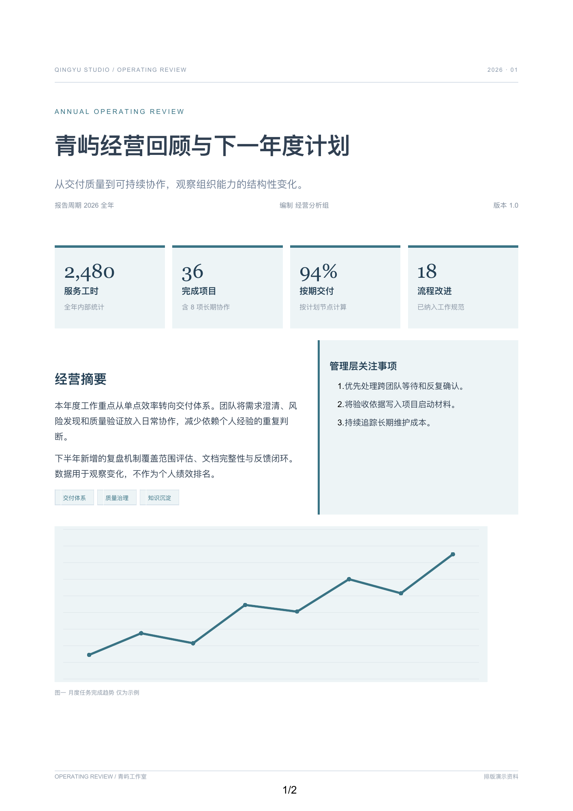
INPUT / OUTPUT / EVIDENCE
Complex pages.
Real documents.
Twelve synthetic fixtures: reports, catalogues, specifications, agreements and handbooks. Each preview is an actual DOCX render; it is not a browser capture.
27 original pages · 8 native charts and XLSX workbooks · 8 checkbox controls. Same-environment regression evidence; not universal HTML/Word pixel parity.
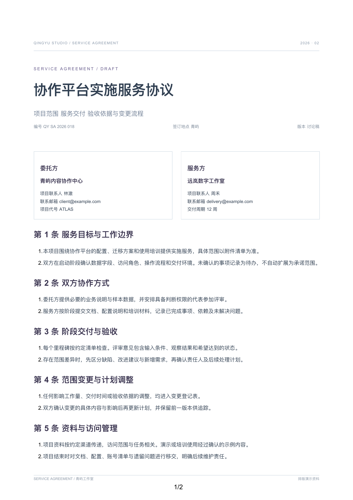
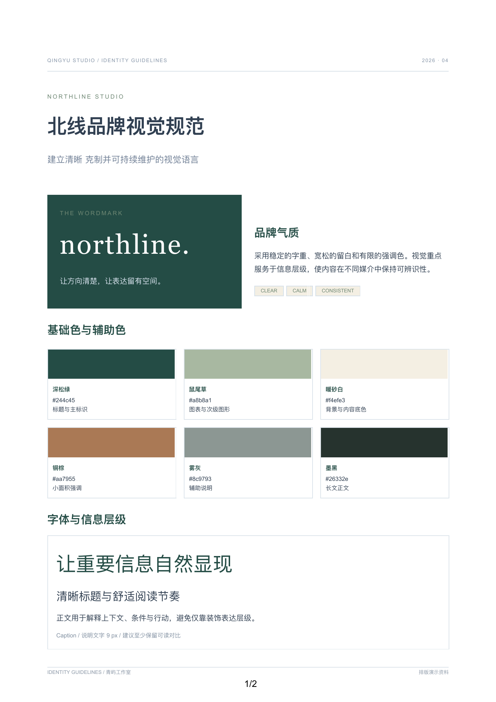
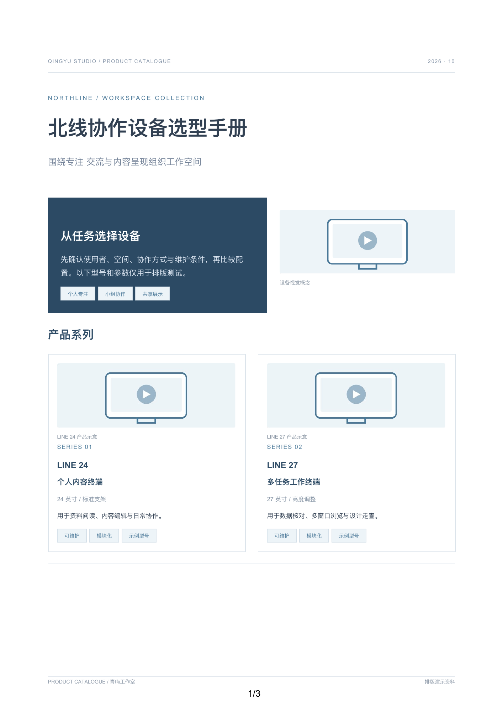
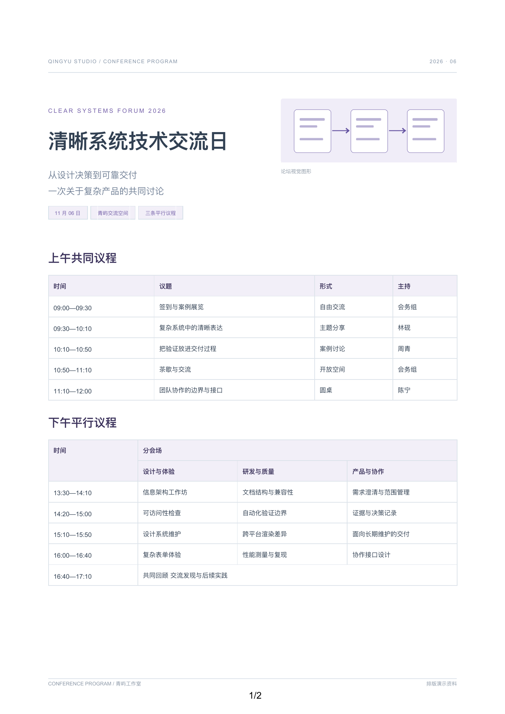
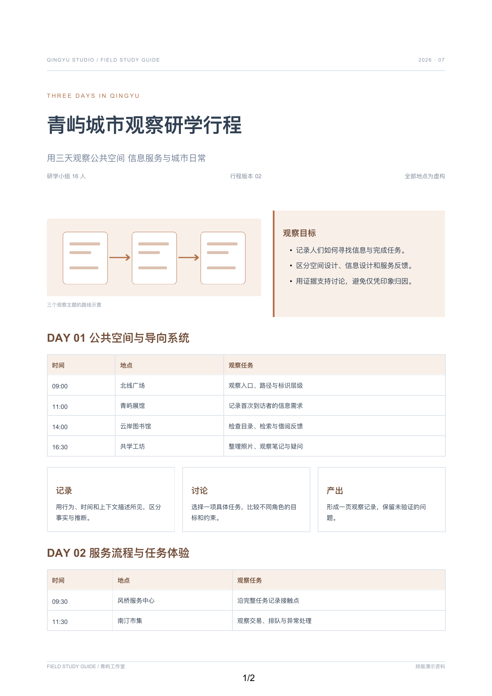
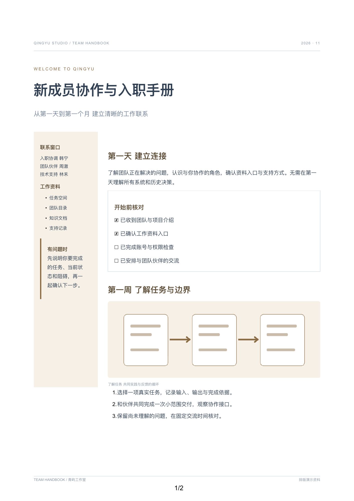
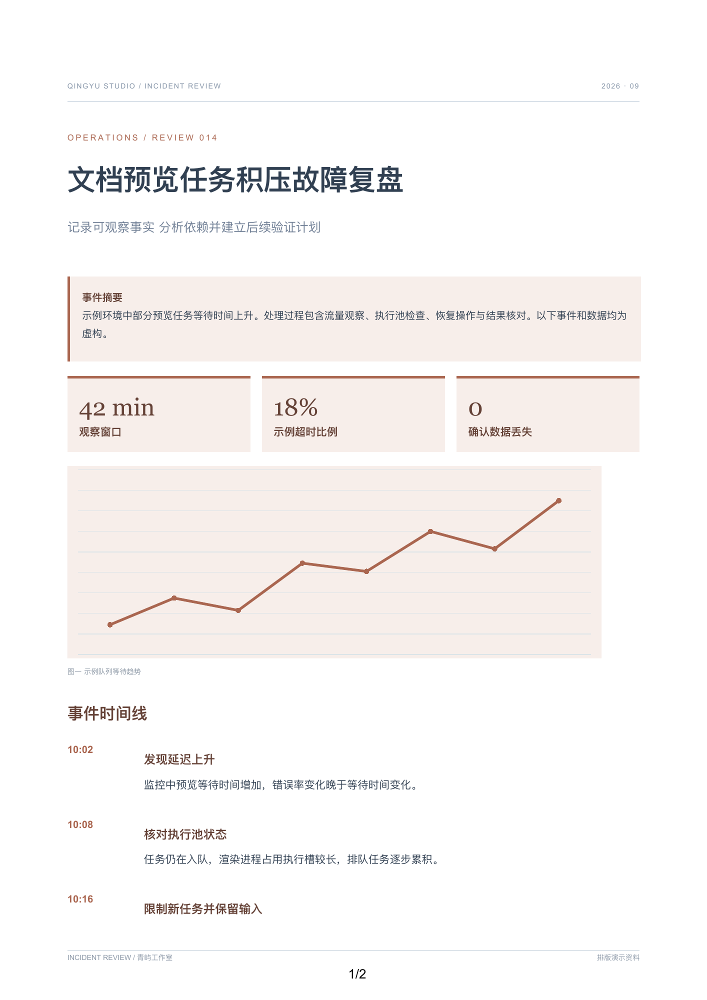
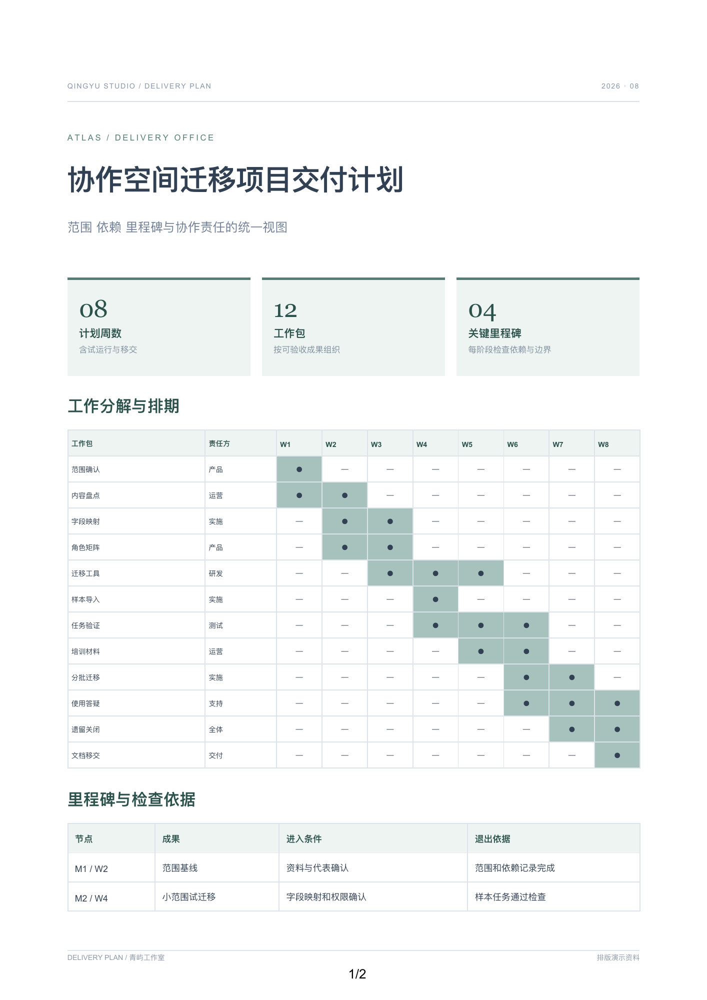
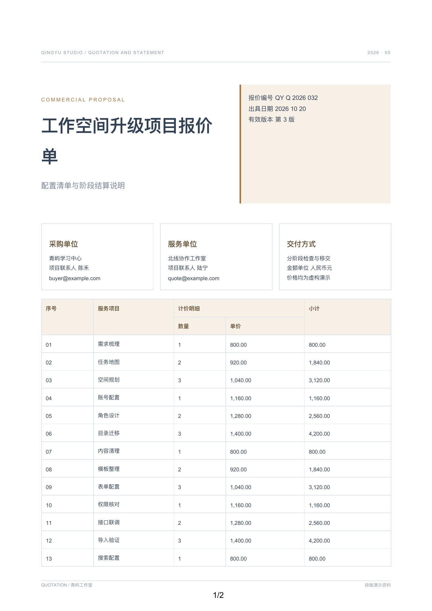
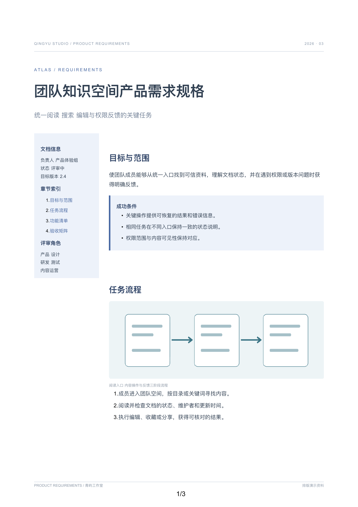
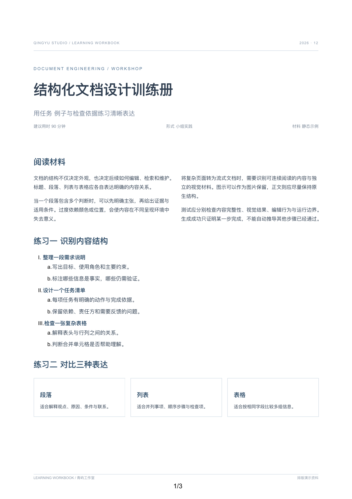
Try the editor you use.
Office clients can wrap and render content differently. Download the originals, add paragraphs, test native objects, and report the client version with a minimal reproduction. Read the full validation record.